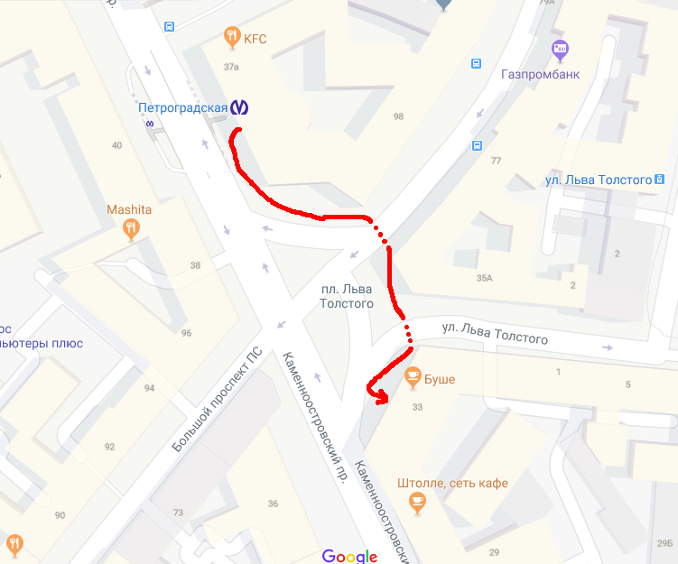
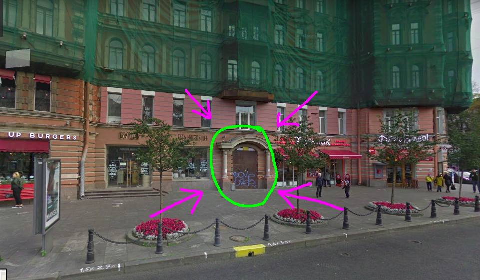

Питер, мы собираемся на выходных, чтобы писать игры и играть в игры! Ludum dare уже начался!
SPb LD48 #40, 2 и 3 декабря! Стартуем в 10:30 в субботу!
Тема LD40: The more you have, the worse it is
Как попасть на мероприятие?
Гейм-джем пройдет в коворкинге «Ясная поляна»
Вот карта: ул. Льва Толстого 1-3, прямо у м. «Петроградская».
Идем вот сюда:

И прямо в эту дверь (теперь там все куда цивильнее, чем на панорамах):

Нажми на кнопку справа от двери, получишь результат! Там по лестнице или на лифте на 3-й этаж, на этаже налево.
Вступайте в группу в телеграме, чтобы быть в курсе новостей!
И обязательно отметьтесь в опросе внизу, там же можно зарегистрироваться на мероприятие.
Группа в вк: ludumdarespb
Группа в Telegram: Ludumdare_SPb